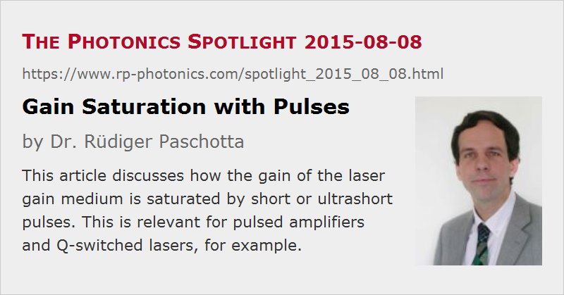

Gain Saturation with Pulses
Posted on 2015-08-08 as a part of the Photonics Spotlight (available as e-mail newsletter!)
Permanent link: https://www.rp-photonics.com/spotlight_2015_08_08.html
Author: Dr. Rüdiger Paschotta, RP Photonics Consulting GmbH
Abstract: This article discusses how the gain of the laser gain medium is saturated by short or ultrashort pulses. This is relevant for pulsed amplifiers and Q-switched lasers, for example.

It is well-known that the saturation of the optical gain of a laser amplifier operated with constant pump and signal input power can be described with a formula like g(Ps) = g0 / (1 + Ps / Psat), where g0 is the small-signal gain, Ps is the signal input power and Psat is the saturation power. (The gain should be small, as otherwise the signal power rises within the gain medium; otherwise, one may have to numerically split the gain medium into several sections.) What, however, happens when we apply a short signal pulse? That question is relevant in many important cases, for example involving pulsed amplifiers and Q-switched lasers.
Calculating Gain Saturation
Some people believe that saturation of a laser amplifier becomes substantial once the power of a signal pulse approximately reaches the level of the saturation power. That guess can be quite wrong, however. The formula given above applies only in the steady state, and that is typically reached after a few times the upper-state lifetime of the laser medium. For most solid-state laser gain media, the upper-state lifetime is well above 1 μs, so that a nanosecond or even picosecond pulse is by far not long enough to bring the gain medium to its steady state.
For pulse durations far below the upper-state lifetime, it is quite clear that spontaneous emission has a negligible impact on the upper state population during the time of such a pulse. Therefore, the value of the upper-state lifetime cannot be relevant for the saturation behavior, and the same holds for the saturation power, which depends on the upper-state lifetime. What is relevant here is the saturation energy Esat, which is essentially determined by the emission cross section at the signal wavelength and is not influenced by the upper-state lifetime. (For example, it is not affected by quenching processes reducing that lifetime.) Again, a simple formula can be used to calculate the gain after the pulse: gf = gi exp(−Es / Esat), where gi is the initial gain and Es is the signal pulse energy.
Example: Saturation in a Q-switched Laser
When the resonator of a Q-switched solid-state laser is switched to its high-Q state, the signal power rises rapidly, starting from a very low level. When it reaches the saturation power, gain saturation still stays very weak, as explained above. Only once the temporally integrated laser power reaches the order of the saturation energy, gain saturation sets in. Therefore, the peak power occurring within such a laser (and also the output peak power) can be orders of magnitude above the saturation power of the gain medium. (For a continuous-wave output power, that is usually impossible.)
Gain Saturation Caused by an Ultrashort Pulse
A difficult issue arises when we want to calculate the saturation of a laser gain medium in an ultrafast amplifier caused by an optical pulse with a duration far below 1 ps. Such a pulse has a substantial optical bandwidth – at least the Fourier-limited bandwidth or even more in case of chirped pulses. One would naturally describe the spectral properties in the frequency domain, but that is clearly unsuitable for calculating the time-dependent gain. Obviously, neither the time domain nor the frequency domain is suitable for fully treating what happens here.
The interaction of single atoms or ions with pulsed light can be described with Bloch equations, which are differential equations in the time domain. For a complicated ensemble of laser-active ions interacting with a host crystal, however, this approach is hardly applicable. The first challenge which one meets here is that one will normally not get all the detailed data to describe the behavior of ions in such a situation.
How can one obtain at least approximate results? As long as the pulse energy is well below the saturation energy, one can easily calculate the pulse amplification in the frequency domain. The weak effect of gain saturation can be simulated afterwords by reducing the gain according to the amount of energy the pulse has extracted – which is simply the difference of output and input pulse energy, assuming that additional effects such as parasitic losses do not occur.
For the case that the pulse energy reaches or exceeds the level of the saturation energy, the described approach can be extended. One may simulate the interaction of the pulse with the gain medium in multiple steps, where each time only a fraction of the gain is applied to the pulse, and afterwords the gain is reduced according to the extracted energy. This is an approximate method, however, which cannot precisely describe the details of such an amplification process.
This article is a posting of the Photonics Spotlight, authored by Dr. Rüdiger Paschotta. You may link to this page and cite it, because its location is permanent. See also the RP Photonics Encyclopedia.
Note that you can also receive the articles in the form of a newsletter or with an RSS feed.
Questions and Comments from Users
Here you can submit questions and comments. As far as they get accepted by the author, they will appear above this paragraph together with the author’s answer. The author will decide on acceptance based on certain criteria. Essentially, the issue must be of sufficiently broad interest.
Please do not enter personal data here; we would otherwise delete it soon. (See also our privacy declaration.) If you wish to receive personal feedback or consultancy from the author, please contact him e.g. via e-mail.
By submitting the information, you give your consent to the potential publication of your inputs on our website according to our rules. (If you later retract your consent, we will delete those inputs.) As your inputs are first reviewed by the author, they may be published with some delay.
|  |
If you like this page, please share the link with your friends and colleagues, e.g. via social media:
These sharing buttons are implemented in a privacy-friendly way!